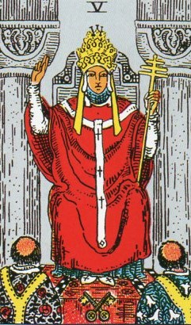
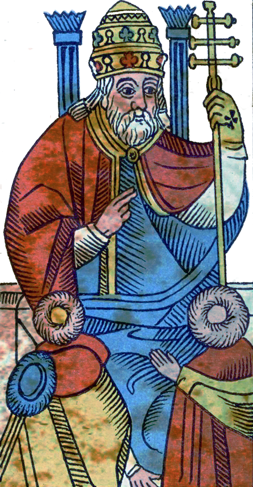
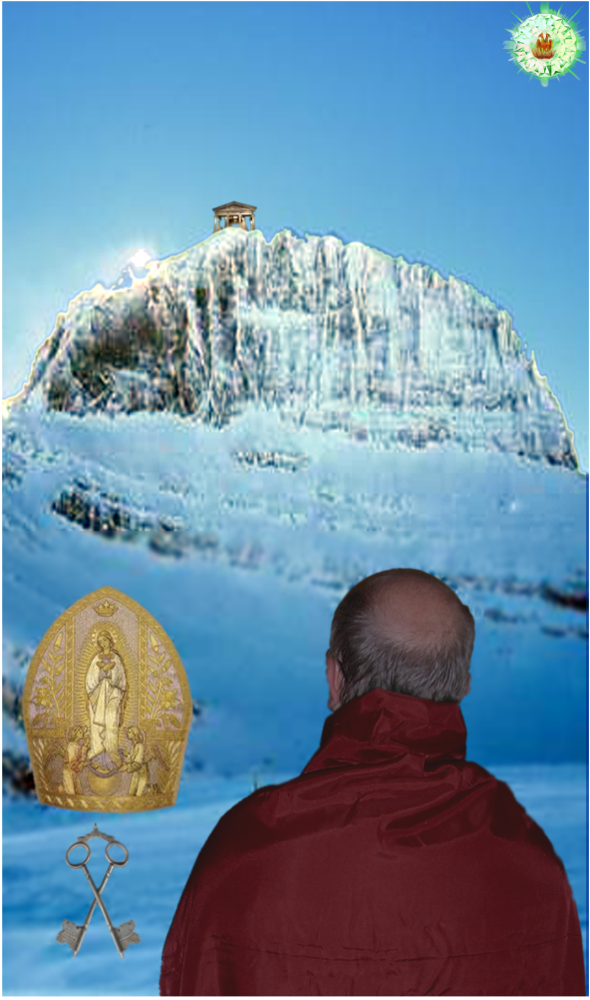
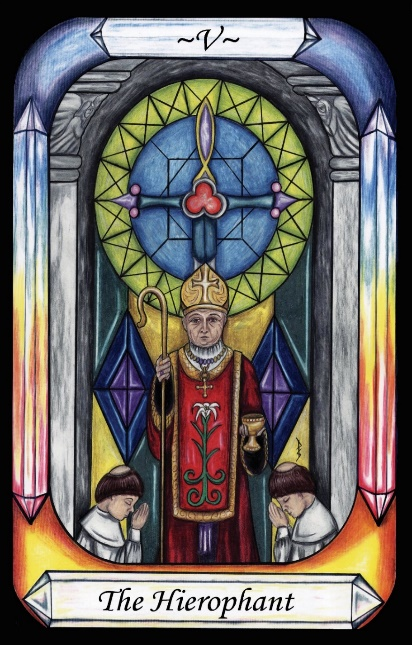

The Hierophant




Representation |
A Holy man, such as the Pope. |
Meaning |
Someone who points our way to holiness. |
Opposite card |
The Devil, opposite of Holy. |
Function |
The Hierophant is the Pope representing the title Hierophant which translates to Show Holy.
[P68] Above these, in the eighth domain, divested of the trappings of the Governors, man joins those who sing the praises of God. [The Hierophant]…
[P69] Then all of those in the eighth domain return unto God and surrender themselves to the powers, and become powers, and are one with God.
RWS Imagery
A man wears an elaborate gold crown, red robes trimmed with white, and is seated between two large stone columns. He raises his right hand in benediction, and holds a golden staff in his left. At his feet is a crossed pair of keys. Two men, presumably priests, with partially bald or tonsured heads face him, at his feet.
Pymander Interpretation
According to Wikipedia, the name Hierophant means “show holy”. It refers to one who points out what is holy to others. The Imagery appears to be a Christianised version of this, showing the Pope.